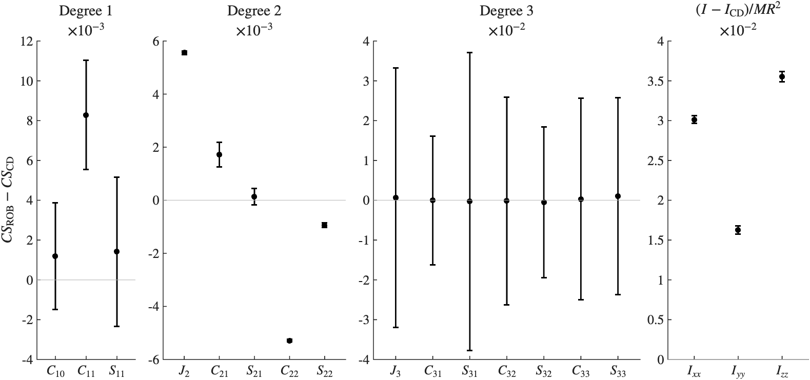
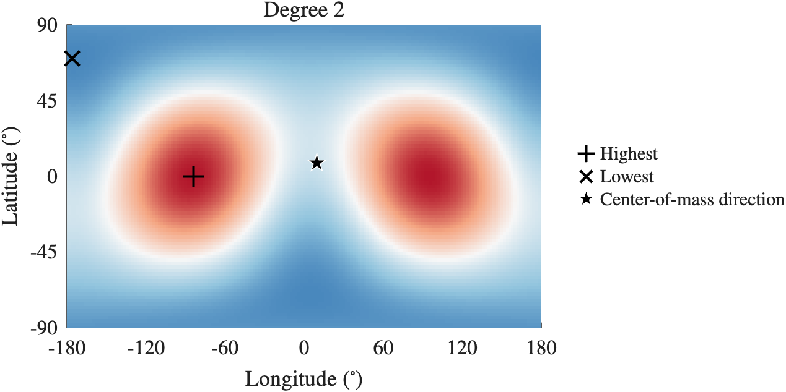
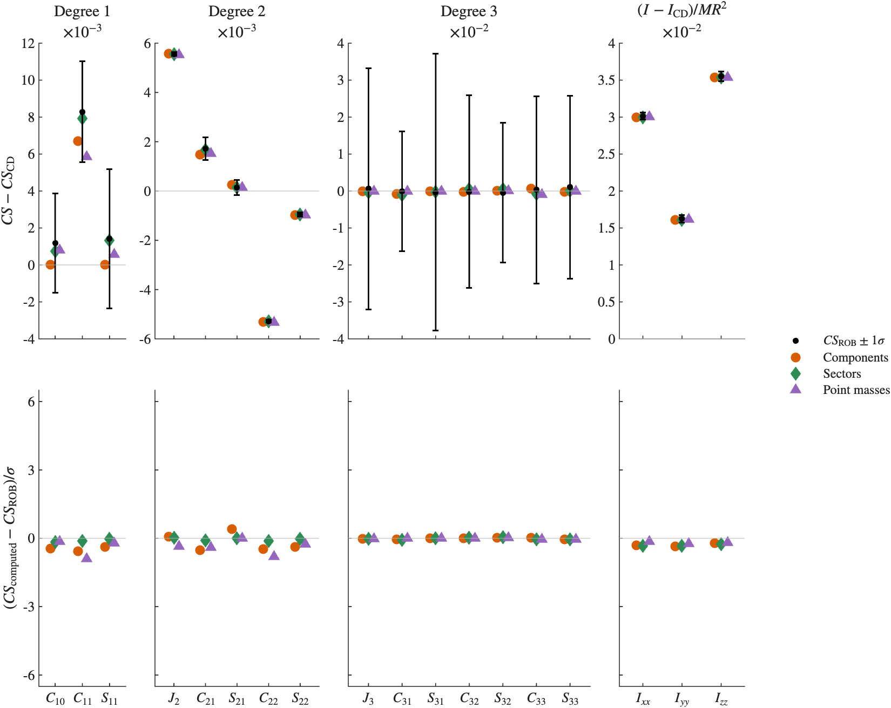
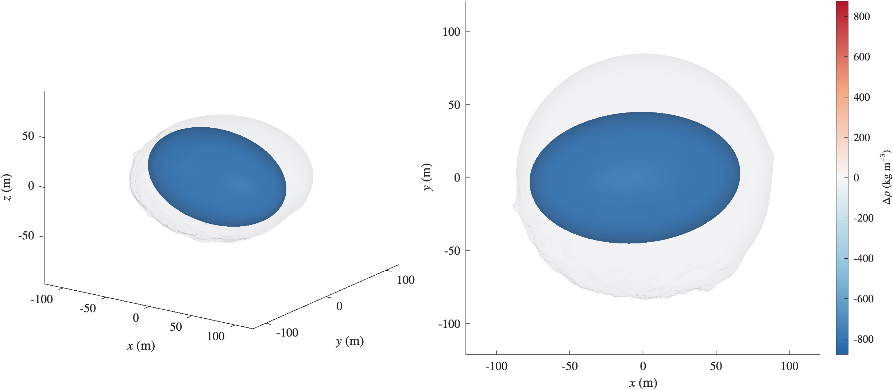
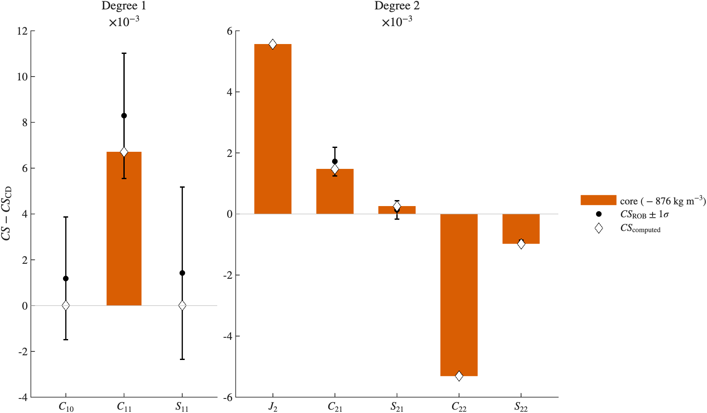
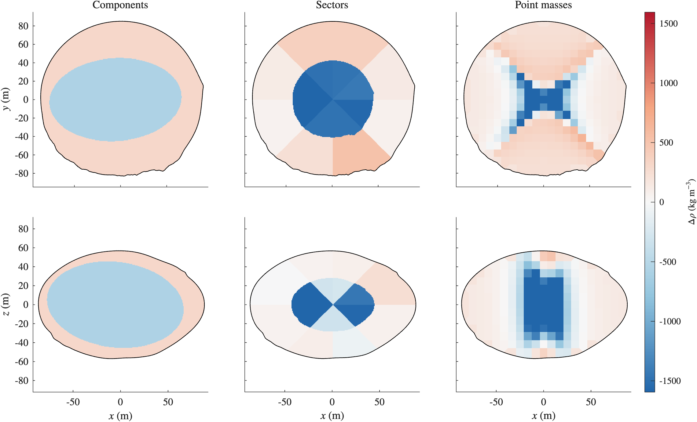
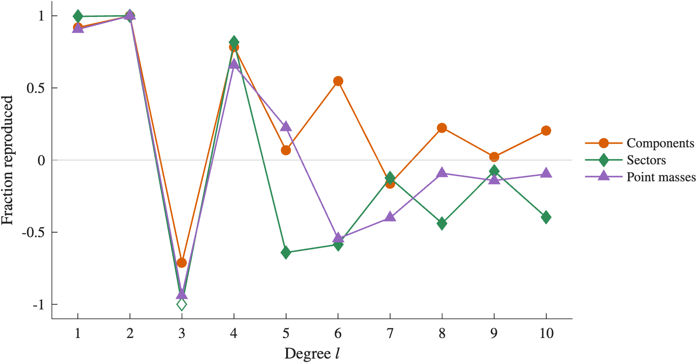

ROB-DATA6: Dimorphos#
Last edited November 3, 2026
In ROB-DATA6 all three moments of inertia are 32 to 62σ larger than at constant density: mass lies farther from the center than in a uniform body, so the inside is light and the outside dense. Degree 2 adds that the light region is elongated along x. One light prolate core at the center, with semi-axes of 73 and 45 m, fits with 6 parameters and ranks first, 3.2 ahead of the point masses and 5.2 ahead of the sectors in AIC. All three make the same structure. Over degrees 4 to 10, which no solution was fitted to, the core reproduces 64%, the sectors 50% and the point masses 46%. At the GRASS point the core predicts the acceleration to 0.5%, the point masses to 0.7%.
| Kind | Model | Parameters | Reduced χ² | p | AIC | Fraction reproduced, degrees 1–3 | Fraction reproduced, degrees 4–10 |
|---|---|---|---|---|---|---|---|
| Components | light prolate core | 6.0 | 0.12 | 1.00 | 13.4 | 0.93 | 0.64 |
| Point masses | 2674 points | 7.8 | 0.11 | 1.00 | 16.6 | 0.92 | 0.46 |
| Sectors | 2 × 4 × 8 | 9.2 | 0.04 | 1.00 | 18.7 | 0.96 | 0.50 |
The best solution of each kind, by AIC (bold: the lowest). Parameters: the effective number of parameters. Fraction reproduced: the fraction of ROB's exact coefficients a solution reproduces, over the fitted degrees 1–3 and over degrees 4–10, which were not (1: all; 0: no better than constant density; negative: worse). See How to read these pages.
1. What the measurements show#

| Measurement | CS − CS_CD | 1σ | In σ | What it says |
|---|---|---|---|---|
| +3 | center of mass toward +x | |||
| −79 | higher: mass toward the equator | |||
| +4 | mass toward +x in the north, −x in the south | |||
| −97 | mass toward ±y more than ±x | |||
| −11 | mass toward longitudes −45° and 135° | |||
| +62 | mass farther from the x-axis | |||
| +32 | mass farther from the y-axis | |||
| +56 | mass farther from the z-axis |
The measurements more than 3σ from constant density.
The moments of inertia are the strongest signal: +62σ, +32σ, +56σ. Each moment is the sum of mass times squared distance from an axis, so all three larger means mass farther from the center: a light interior under a dense exterior. Degree 2 cannot see this, since it holds only differences of the moments. It shows that the move is uneven: 97σ lower (mass toward the ends of the y-axis) and 79σ higher (toward the equator). The center of mass is 1.3 m toward +x, 3σ.
2. Where the mass is#

Degree 2 puts the excess at the ends of the y-axis and the deficit near the poles and along x. A light body inside, longer along x than along y and z, does all of it: it takes mass from along x, making lower; it raises all three moments, because what is left is farther out; and it raises , because it is shorter along z than along x.
3. How well each solution fits#

The core needs 6 parameters, counting its two sizes, which were chosen on a grid. The point masses (7.8 effective parameters) rank 3.2 behind and the sectors (9.2) 5.2 behind. All three match every measurement within 1σ. Adding a layer does not help: a layer of any thickness from 1 to 20 m leaves χ² at 0.57, so the measurements cannot determine one, and its AIC is 1.2 higher.
4. The model with components#

| Component | Shape and place | Relative density (kg/m³) | Density (kg/m³) | Mass anomaly (kg); makes most of |
|---|---|---|---|---|
| core | ellipsoid, semi-axes 72 × 45 × 45 m, 5 m from the center toward lat 0°, lon 180° | −876 ± 5 | 1025 | ; −98σ, −79σ |
Background density 1901 kg/m³ (bulk density 1594 kg/m³). Makes most of: the component's part of each coefficient in units of its 1σ.

The core is an ellipsoid with semi-axes of 72.5, 45 and 45 m, 5.5 m from the center toward −x, its long axis within about 8° of the x-axis. It is 876 ± 5 kg/m³ lighter than the background: 1025 kg/m³ in a background of 1901 kg/m³, where the bulk density is 1594 kg/m³. The ±5 holds the size fixed; size and density trade off, and fits with χ² below 3 have densities from 993 to 1025 kg/m³. Its tilt makes and , and its offset the center-of-mass offset.
5. Point masses and components side by side#

| Solution | Mass moved (% of M) | Denser toward (m) | Lighter toward (m) |
|---|---|---|---|
| Components | 10.0 | (4, 0, 0) | (−5, 0, 0) |
| Sectors | 9.1 | (12, 2, 0) | (0, 0, −1) |
| Point masses | 11.3 | (4, 0, 1) | (−4, 0, 0) |
| Correlation | Components | Sectors | Point masses |
|---|---|---|---|
| Components | 1.00 | 0.61 | 0.42 |
| Sectors | 0.61 | 1.00 | 0.48 |
| Point masses | 0.42 | 0.48 | 1.00 |
Mass moved: the mass above the bulk density, as a percentage of the mass of the body. Denser and lighter toward: the center of the mass above and below the bulk density, from the center of figure. Correlation: of the relative densities of the solutions, 8.3 m cell by 8.3 m cell.
All three make a light region at the center, elongated along x, under a denser exterior, and they move about the same mass: 10.0% of the mass of the body for the core, 9.1% for the sectors and 11.3% for the point masses. Their relative densities correlate 0.61 between the core and the sectors, 0.42 between the core and the point masses and 0.48 between the sectors and the point masses. The sectors can only make it as their inner shell. The point masses make it narrower than the core, about 40 m across along x.
6. Against ROB's exact values and the GRASS point#

In the fitted degrees all three reproduce 92 to 96%. No solution reproduces degree 3 (−0.71 to −1.96): it is fitted, but its 1σ is far larger than its anomaly. Over degrees 4 to 10 the core reproduces 64%, the sectors 50% and the point masses 46%. The core reproduces the even degrees 4 to 10 at 78, 55, 22 and 20% and the odd degrees 5, 7 and 9 at 7, −16 and 2%: being nearly symmetric about the center, it cannot make an asymmetry that degree 3 is too uncertain to show.
| Solution | Acceleration minus ROB's (% of ROB's) | Angle from ROB's |
|---|---|---|
| Components | +0.5% | 2.5° |
| Sectors | +1.6% | 2.3° |
| Point masses, sensitivity weighting | −0.7% | 2.5° |
| Point masses, equal weighting | +1.6% | 2.5° |
| Constant density | −1.8% | 2.6° |
The acceleration each solution predicts at the GRASS surface point minus ROB's, in magnitude (% of ROB's magnitude) and direction, on the full-resolution shape model.
The GRASS point lies at the +x end of the body. Constant density predicts the acceleration 1.8% low. The core predicts it to 0.5%, the point masses to 0.7%, the sectors to 1.6%. In direction all are about 2.5° from ROB's, like constant density, so the direction does not separate them.